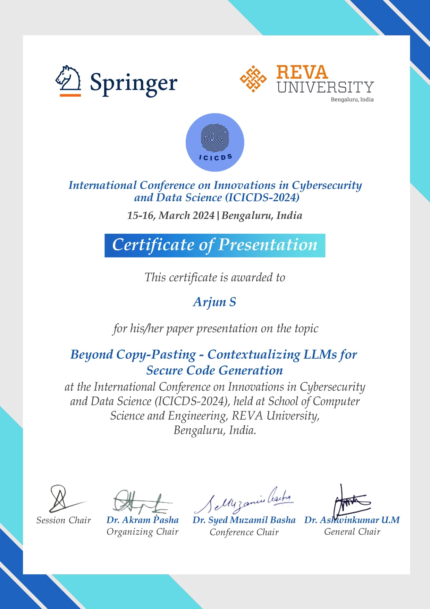

Arjun Sampath Kumar

A dedicated Penetration Tester and Security Researcher based in Chennai, Tamil Nadu, India. Currently pursuing Bachelors in Techology: Computer Science Engineering with specialty in Cybersecurity. Arjun has gained hands-on experience through internships and various cybersecurity projects. With a passion for securing digital infrastructures, he specializes in vulnerability assessment, penetration testing, and cloud security. Arjun is committed to advancing his knowledge and contributing to the cybersecurity community through research, publications, and active participation in challenges like Hackathons and CTFs.
Experience
Currently, Arjun is working as a Vulnerability Assessment & Penetration Testing Intern at WhizzC since August 2024. In this role, he has conducted multiple penetration tests across diverse client sectors, including 4 Web Applications, 2 Network, and 1 Mobile App penetration tests. Notably, Arjun single-handedly discovered 7 critical vulnerabilities and 16 high-severity vulnerabilities during Dynamic Application Security Testing (DAST). His contributions also include assisting in the CVSS scoring and drafting 7 client-ready professional pentest reports.
Previously, Arjun served as a Student Peer Mentor & Teaching Assistant at KL University from April 2022 to April 2024. He mentored 40 peers in subjects like Cryptography, Computer Networks, and Security coursework, while also conducting 20 study sessions. In addition, Arjun provided guidance on coursework and supported lab sessions for students.
For more details on Arjun's professional background, you can visit his LinkedIn profile.
Skills
Arjun has extensive hands-on experience in Penetration Testing, focusing on Web Application Security (OWASP), Cloud Infrastructure (AWS), RESTAPIs, and Active Directory. He is proficient in administering and hardening web based servers like Apache / Nginx. and in handling application and DNS level security threats through Cloudflare, as well as writing robust Web Application Firewall (WAF) and access rules against threats such as XSS, SQLi, DDoS, etc.
Arjun is also skilled in using popular security tools such as BurpSuite, Metasploit, Nmap, Nessus, BloodhoundAD, MobSF, Zed Attack Proxy and Nikto. His software development skills span across multiple languages including Python, Bash, Powershell, PHP, and full stack web development framworks like Django, ReactJS, Spring Boot and FastAPI.
Certifications
He pursues certifications to consistently enhance his expertise, maintain alignment with industry standards, and validate his skills. It allows him to implement methodologies and frameworks effectively.
"For the best return on your money, pour your purse into your head."
- Benjamin Franklin
Arjun holds several industry-recognized global certifications and credentails, including CompTIA Security+ in (April 2024), Certified Ethical Hacker - CEH v12 in (July 2023), AWS Cloud Practitioner in (June 2023), Juniper Networks Certified Associate, Junos (JNCIA) (January 2023), (ISC)² Certified in Cybersecurity℠ - CC and several Microsoft certifications such as AZ-900 and SC-900.

Projects
Hacklido.com – A leading information security blogging platform, attracts over 6,000 active users and generates more than 150,000 free reads per month. The platform is built using the LAMP stack (Linux, Apache, MySQL, PHP) and provides a space for cybersecurity professionals to share research, analysis, and tutorials. Through its high-quality content and community-driven discussions, it has become a go-to resource in the InfoSec space, helping to educate and raise awareness about emerging cybersecurity threats and best practices.
Dorkit – Dorkit is a browser-based automated Google dorking tool designed to streamline the process of performing OSINT (Open Source Intelligence) gathering. With the ability to process over 350,000 dorks per month, Dorkit allows cybersecurity professionals to efficiently identify exposed data, vulnerabilities, and sensitive information on the web. Built using ReactJS, Dorkit provides an intuitive user interface for users to generate and search through various Google dorks, significantly enhancing OSINT capabilities for penetration testers and researchers.
PRVigil – a continuous integration tool designed to ensure that only pull requests (PRs) with healthy, high-quality code are merged into your GitHub repository. Developed using Django, PRVigil integrates seamlessly with GitHub’s API to analyze incoming pull requests to your repository for issues such as coding standards violations, test coverage gaps, and security vulnerabilities comparing to secure coding practices of OWASP. By automating this code review process, PRVigil helps development teams maintain the integrity and quality of their codebase, thus reducing the risk of introducing bugs or security vulnerabilities into production systems.
Logalyzer – The IT Log Analyzer is an in-house tool built to detect, triage, and remediate security threats by analyzing logs from various IT systems. Using Django, the tool processes and analyzes logs in real time to identify suspicious activities, potential security breaches, and anomalies within the environment. It enables security teams to respond to incidents swiftly, providing detailed insights into the nature of the threat, its impact, and recommended remediation actions. This tool is critical for organizations aiming to enhance their security posture by providing automated threat detection and streamlined incident response workflows.
AuditX – A compliance-as-code platform designed to manage and execute audits based on the CIS (Center for Internet Security) benchmarks. Built using FastAPI, AuditX automates the process of auditing and reporting, ensuring that systems and networks comply with industry-standard security frameworks. This platform enables organizations to streamline their compliance workflows, reducing manual effort and minimizing human error. By automating audits and providing real-time reports, AuditX enhances the efficiency of compliance teams and helps organizations maintain strong security practices with minimal overhead.
SemGrepConsolidator – A automation tool for managing and processing SemGrep SAST (Static Application Security Testing) scans. Built in Python, the tool automates the scanning process and consolidates the results into SARIF (Static Analysis Results Interchange Format) reports, which can be used for further analysis and integration into CI/CD pipelines. By automating the generation of security reports, SemGrepConsolidator helps organizations maintain a proactive security stance by identifying vulnerabilities early in the development lifecycle, ensuring a more secure and robust codebase.
Research Work
With a deep interest in cybersecurity and LLM security research, he contributed to the research community by having co-authored several impactful research papers. Notable works include Mitigating Software Package Hallucinations in Open Source LLM Models (currently awaiting IEEE publication) and "Beyond Copy–Pasting—Contextualizing LLMs for Secure Code Generation" published by Springer Nature's Innovations in cybersecurity and data Science. His research also covers a Novel Attack Vector to Abuse AWS for Cryptojacking , presented at the 2024 3rd International Conference on Applied Artificial Intelligence and Computing (ICAAIC), and Defending AWS Cloud Infrastructure Using Deceptive Defense , featured at the 2024 International Conference on Expert Clouds and Applications (ICOECA). For a comprehensive list of his publications, please visit his ORCID profile .
Aside from his technical successes, Arjun has contributed significantly to the cybersecurity community by leading interesting sessions and mentoring peers and juniors. He has mentored prospective cybersecurity students at the White Hat Hackers Club, imparting his knowledge of ethical hacking, vulnerability assessment, and secure coding methods. His dedication to educating and creating a friendly learning atmosphere has enabled many people to expand their grasp of cybersecurity.
Achievements
Demonstrating his passion for sharing knowledge, Arjun successfully runs a well-received cybersecurity newsletter that has amassed over 7,000 subscribers and garners more than 20,000 reads per month. This platform serves as an educational resource, delivering curated insights, news, and analysis on the latest trends in cybersecurity to a growing audience of professionals and enthusiasts.
He also successfully cracked KPMG’s CTF-2024, earning a coveted 6-month Cybersecurity Analyst Internship at KPMG India. Arjun holds a position in the top 1% on TryHackMe globally, having completed over 150 challenges and grinding in PortSwigger Labs. He remains an avid participant in Capture The Flag (CTF) competitions, consistently pushing the boundaries of his knowledge and expertise.